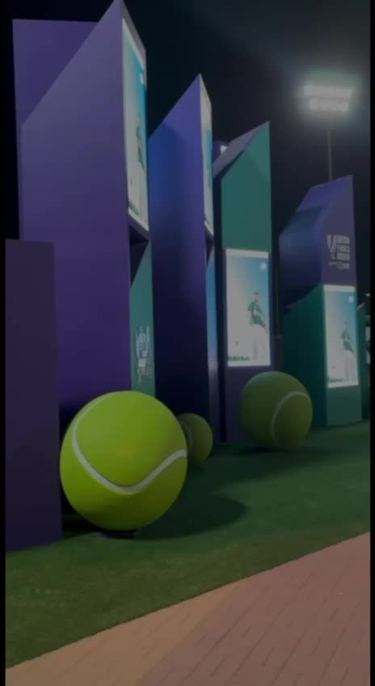

Dark ↔ Light — Transition Language
The five environment seams each get a designed device — never a bare background-color swap (§11). Devices reuse the network-field vocabulary so transitions belong to the same system as the scenes they join.
HERO — DARK
ENVIRONMENT
ENVIRONMENT
ABOUT — LIGHT EDITORIAL
ABOUT — LIGHT
TRACK RECORD — DARK FIELD

PROJECTS — DARK EVIDENCE
↓
GALLERY — LIGHT MEDIA